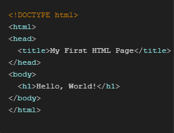
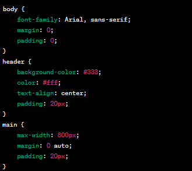
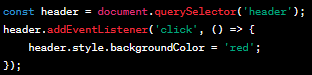

O que você aprenderá...
Aqui você encontrará informações sobre a criação de sites usando HTML, CSS e JavaScript.
Aqui você encontrará informações sobre a criação de sites usando HTML, CSS e JavaScript.
Antes de começar, saiba qual é o propósito do seu site e quais informações ou funcionalidades ele deve fornecer.
Certifique-se de ter um editor de código instalado, como o Visual Studio Code.
Crie uma pasta para o seu projeto e organize os arquivos da seguinte forma:
- Meu site
-- index.html
--- styles.css
---- script.js
Crie um arquivo HTML básico para a estrutura do seu site. Você pode usar este modelo como ponto de partida:
Crie um arquivo CSS na pasta "styles" para estilizar seu site. Por exemplo:
Crie um arquivo JavaScript na pasta "scripts" para adicionar interatividade. Por exemplo:
Abra o arquivo index.html em um navegador para visualizar seu site localmente.
Verifique se o site funciona como esperado, fazendo os ajustes necessários no HTML, CSS e JavaScript conforme necessário.
Quando estiver satisfeito com o resultado, você pode hospedar seu site em um servidor da web para que outras pessoas possam acessá-lo.